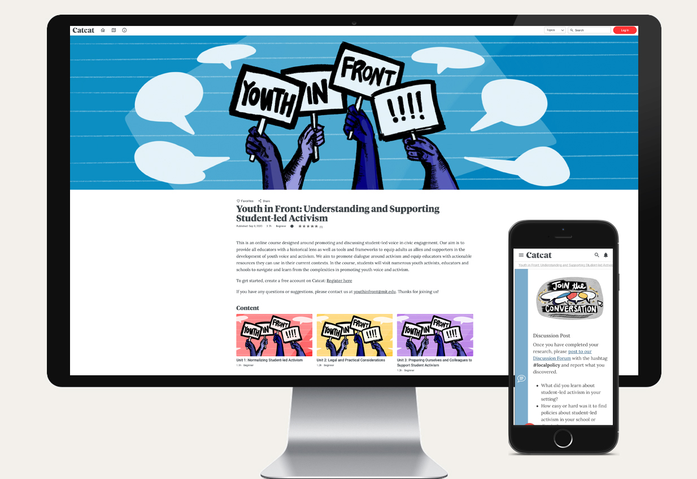
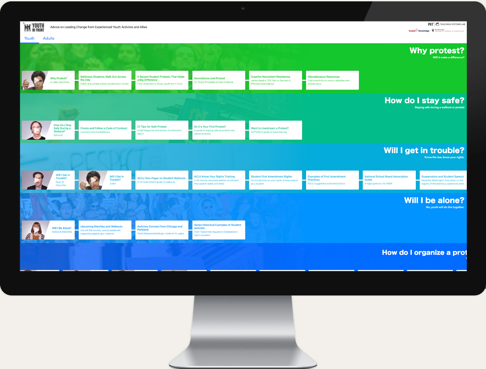

Youth in Front
Educational course on youth activism
YouthInFront began as an online learning resource, created by civic educators and inspired by the rise in youth activism around the country. Stemming from a collaboration between Justin Reich from MIT, Meira Levinson from the Harvard Graduate School of Education (HGSE), and Freshcognate’s Founder Doug Pietrzak, this project benefited from the contributions of over 100 volunteers.
We curated a collection of resources from media producers, civic educators, youth activists and organizers, software engineers, and many organizations like the American Civil Liberties Union and Facing History and Ourselves. Our team sourced questions about activism from students and educators, interviewed over 30 activists and allies, produced a video series, and launched a website and social media campaign.
In 2019, with additional support from Learning for Justice, the Youth In Front team expanded to produce an online course as a resource for educators, school and district leaders, and other adults who work in schools. Our goal is to help teachers fulfill the civic mission of schools by putting youth in front. Fresh Cognate developed the course in the platform CatCat, oversaw curriculum writing and development, produced a series of video case studies highlighting youth activism around the US, and produced a series of studio lectures for learners.
-

We designed and developed the Youth in Front course in the CatCat platform to reach learners everwhere.
-

Our documentary team traveled to Montpelier, Vermont to tell the story of high school student activists who organized the raising of the Black Lives Matter flag at their school, inspiring youth activists around the country.
-
We filmed Professor Meira Levinson and Teacher Kevin Dua in the studio for our course instruction videos.
-
We produced a series of interviews with experts in the field of activism, including Marshall Ganz.
-

The original YIF site designed for youth and adults, developed in concert with our partners at MIT and Harvard along with dozens on volunteers in the wake of the Parkland School shootings.
Details
Client: Southern Poverty Law Center and MIT TSL
Date: 15 March 2020 to present
Online: youthinfront.org